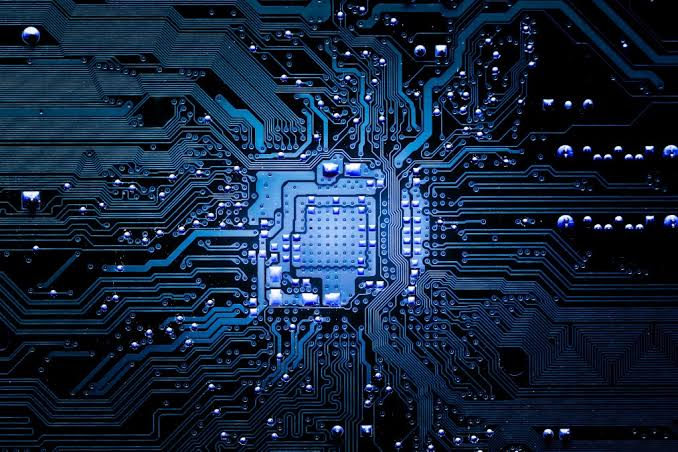

ฮาร์ดแวร์และสถาปัตยกรรมคอมพิวเตอร์

ฮาร์ดแวร์ (Hardware) คือส่วนประกอบทางกายภาพของคอมพิวเตอร์ที่จับต้องได้ เช่น หน่วยประมวลผลกลาง (CPU) หน่วยความจำหลัก (RAM) อุปกรณ์จัดเก็บข้อมูล (Storage) และเมนบอร์ด สถาปัตยกรรมคอมพิวเตอร์อธิบายวิธีที่ส่วนประกอบเหล่านี้เชื่อมต่อและสื่อสารกันตามแบบจำลอง Von Neumann ซึ่งประกอบด้วยหน่วยประมวลผล หน่วยความจำ และอุปกรณ์รับ-ส่งข้อมูล พื้นฐานที่สำคัญคือวงจรตรรกะ (Logic Gate) ที่ประกอบกันเป็นวงจรดิจิทัลซับซ้อนขึ้นเรื่อยๆ จนกลายเป็นโปรเซสเซอร์ ความรู้ด้านนี้ยังต่อยอดไปสู่การออกแบบระบบฝังตัว (Embedded System) ที่พบในอุปกรณ์ IoT และอุปกรณ์อิเล็กทรอนิกส์รอบตัวเรา